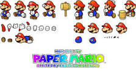
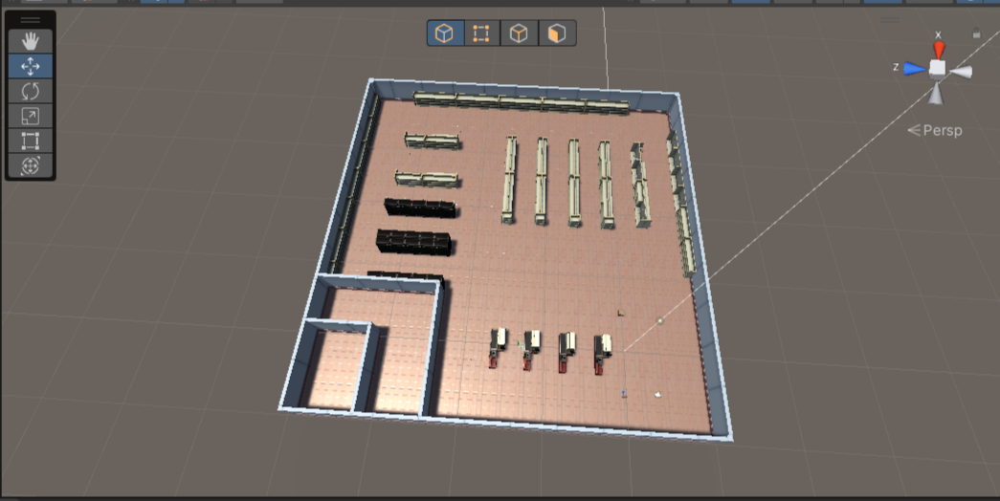

By: Connor Miller
10/16/22
For everyone reading, welcome to my first blog post. In these blog posts I will be
discussing the varies issues I have faced while making a video game, as well as how I
overcame said issues. Todays issue I will be discussing will be the issue of animation,
and how I was able to learn how to animate.
The main issue I ran into with animating the character in my game was how to make sure the
different animation triggered when they were supposed to. For example, if my game character was
lifting up a box, the animation should show him lifting up said box. The way I was able to make the
animations work correctly was by creating different Booleans (true/false statements) that would activate
when the player picked up a box or did someother task. This would make it so that the player would
show the correct animations for the different tasks correcctly.
The main resource I use when trying to figure out any of my game problems is the many many videos on Youtube,
as many people have quick and easy solutions since many of the problems I run into are not new issues within
the community.

Paper Mario Sprite sheet. The images are the animations drawn out and
are similiar to the ones in my game
By: Connor Miller
10/16/22
| Date | Level Version | Addition |
|---|---|---|
| 10/09 | First Prototype | Added Framework |
| 10/14 | Second Prototype | Added Shelves |
| 10/16 | Third Prototype | Added Checkout and Fridges |
Welcome everyone to my second blog post. In today's post we will be talking About
the wonderful joys and troubles that come with designing video game levels.
For the game that I am working on, I most recently finished up the design for our
main level. While it was a lot of fun to make and I am happy with the end result, I
had my fair share of issues. The biggest one that I had was capturing the feel of our game.
Each game has it own theme and environment, and as a level designer it's important to try and
capture that theme and envirnment as best you can with your levels. As a result, many (if not all)
of your levels will go through various changes while you are building them, a majority of them for the better.

The image above is an early prototype of the level for the game I'm working on.